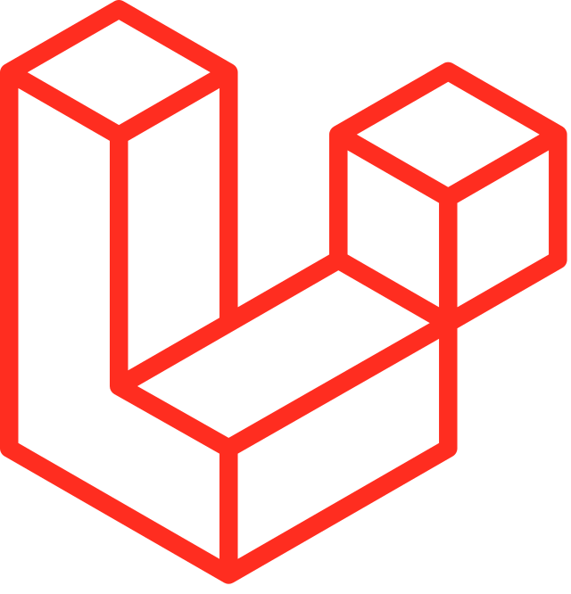

About Me
Saya seorang Fresh Graduate Teknik Informatika Universitas Muhammadiyah yang tertarik dengan Web Development, teknologi yang dapat saya gunakan adalah HTML, CSS, JavaScript, Bootstrap, Tailwind CSS, PHP, Laravel dan database MySql. Saya tertarik untuk terus belajar tentang teknologi informasi. Saya mampu bekerja secara mandiri maupun team work dengan baik.
Study
-
Universitas Muhammadiyah Malang (2018 - 2023)
S1 Teknik Informatika - IPK 3,74 -
SMKN 1 SUKOREJO (2015 - 2018)
Rekayasa Perangkat Lunak
Experience
-
PT META MATA INDONESIA - Jakarta, Indonesia
Full Stack Developer - Intren (Maret 2022 - Juni 2022)
- Mengembangkan fitur payment gateway menggunakan midtrans untuk pemesanan tiket e-course dan event pada platform sehingga pembayaran manjadi instant.
- Redesign tampilan halaman pada platform website metamata dengan design terbaru.
Certificate
-
Belajar Dasar Pemrograman JavaScript, Dicoding Indonesia, 2022
View Certificate
Skill

Bootstrap
Tailwind

Laravel

PHP